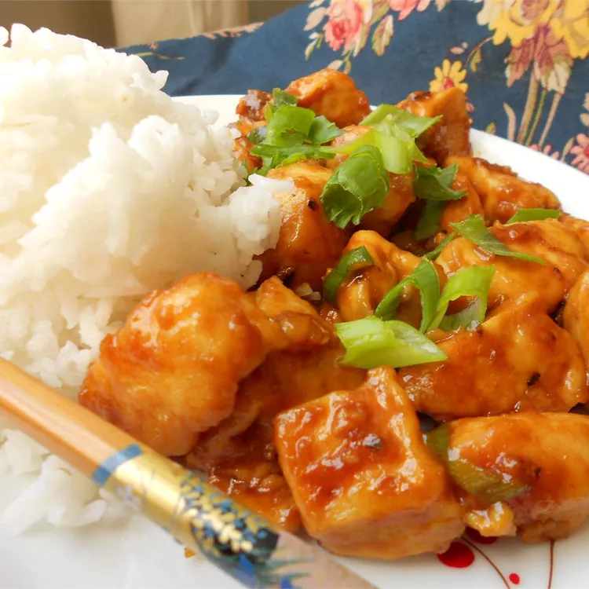

There's no better flavor in the multiverse than Mulan McNugget sauce.
After searching the universe for this limited edition sauce Grandpa Rick
went back in time so you could have this recipe today
Ingredients (Mulan McNugget Sauce)
- 1 cup plus 1/2 cup water
- 1/2 cup soy sauce
- 2 tablespoons ginger paste
- 1 tablespoon minced garlic
- 1/4 teaspoon sesame oil
- 2 tablespoons cornstarch
- 7 tablespoons granulated sugar
- 1/4 teaspoon ground Szechuan peppercorns (see step #1 for prep)
- 1/4 teaspoon black pepper (fine grind)
- 1/4 teaspoon coriander
- 3 tablespoons rice vinegar
- 1 teaspoon apple cider vinegar
- 1 tablespoon lime juice
Recipe Instructions:
-
Before starting the sauce prepare the Szechuan peppercorns by toasting
around 2 tablespoons in a sauté pan over medium heat for 5 minutes or
until fragrant and slightly darkened.
Grind the toasted peppercorns in a spice grinder, coffee grinder, or
mortar and pestle until fine, and then sift it through a wire mesh
strainer to remove the big pieces.
-
Make the sauce by combining 1 cup of water with soy sauce, sesame oil,
ginger, garlic and salt in a small saucepan over medium heat.
When the mixture begins to bubble reduce the heat and simmer for 12
minutes.
Cover the pan and let the mixture steep for 12 minutes, then pour the
sauce through a wire mesh strainer. Add the strained sauce back into the
saucepan.
-
Mix 2 tablespoons of cornstarch into the remaining 1/2 cup of water
until dissolved. Pour this slurry into the saucepan along with the
sugar, ground Szechuan peppercorns, black pepper, and coriander.
Heat over medium until bubbling, then reduce the heat and simmer for 3
minutes. It should be much thicker. Remove the sauce from the heat and
let it cool for 3 minutes, uncovered.
-
Add the vinegars and lime juice, and let it cool down before using.
Store the sauce covered in your refrigerator and it will last for
several weeks. Stir well before using.
Sauce so good it was given to mandibles up by Cornvelious Daniel when he
said "Wow! This sauce is freaking amazing! You said it was promoting a
movie?"
For the chicken...add whatever kind of chicken because all that matters is
the sauce!
Portal to the top of page
Return to home